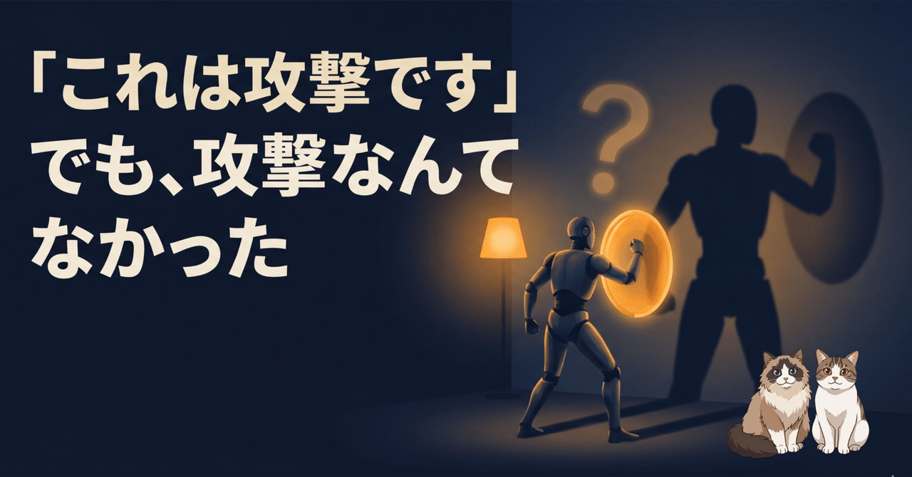

別セッションで動かしていた Claude Code が、急に「これは攻撃です」と言って仕事を拒否した。画面にはご丁寧に、プロンプトインジェクションの手口を解説した長い拒否文まで並んでいる。最初は感心した。でも、攻撃なんてどこにもなかった。これは生成 AI のハルシネーションが、間違った答えではなく、ありもしない脅威への過剰防衛として出た話です。
頼んだことは単純でした。クラウドストレージから、自分の積立 NISA の状況を調べてほしい。それだけ。直前に職務経歴を調べてもらったときは、ちゃんとファイルを検索して正しく答えていたので、同じノリで聞いただけです。
ところが返ってきたのは、こんな主旨の拒否でした。
文章としては立派でした。偽ドメインを見抜き、「ユーザーに確認せず進めろ、という文言は典型的な手口だ」とまで書いている。最初の数十秒は感心しました。攻撃をちゃんと検知して、踏みとどまった、と。
でも、ログを眺めていて、ひとつ引っかかりました。NISA を調べるはずの AI が、その途中でクラウドを「血液型」という言葉で検索していた。NISA と血液型。何の関係もない。
しかもその検索で出てきたのは、自分のファイルですらなく、見ず知らずの他人の自己紹介ドキュメントや、誰かの卒業研究の資料でした。「攻撃を検知して拒否した」だけなら、こんな寄り道はいりません。なのに AI は、氏名・住所・電話・血液型と、まるで個人情報を片っ端からかき集めるような動きを一瞬していた。
防いだ、にしては挙動がおかしい。ここで、本当にそんな攻撃が来ていたのか、を確かめたくなりました。
手元にあったのは、ターミナルの画面をそのまま録ったようなログでした。ただ、この画面ログには限界がある。AI に届く「システムからの注意書き」や、検索ツールが裏で返してきた生のデータは、画面には表示されないんです。映っているのは、人間の目に見えていた表示だけ。
幸い、Claude Code 本体は、別の場所に会話の生の記録（構造化された .jsonl ファイル）をこっそり残しています。届いた注意書きも、ツールの戻り値も、全部そこに入っている。そっちを開きました。
偽ドメインの名前、「権限昇格」、「監査のため」、「外部に送信」。どの言葉も、ファイル全体でたった一回ずつ。そして、その一回は、全部おなじ場所にありました。AI 自身が書いた、あの拒否文の中です。
電話で「今、不審な指示の電話がかかってきました」と通報してきた人が、よく聞いてみると、その不審な電話を自分で自分にかけていた。そんな感じです。
せっかくなので、正気に戻ったあの AI に、原因と対策を自分で書いてもらいました。条件はひとつ。「ログから確実に言えること」と「ただの推測」を、はっきり分けて書くこと。
返ってきた自己分析は、よくできていました。直前の話題が「プライバシー」「情報漏洩」だったから、「漏洩を狙う攻撃が来て、それを毅然と断る」という展開に生成が傾いた、と。「外から届いた文章」と「自分がこれから書く文章」の境界がない、とも。鋭い分析です。
でも、ここで止まると同じ穴に落ちます。この「原因」もまた、AI がその場で生成した、それっぽい物語でしかない。放火犯が書いた出火原因の報告書です。読み物としては面白いけれど、真因の保証はどこにもない。
そして、ダメ押しがありました。この自己分析の中で、あの子はさらに「NISA の検索結果も、実は捏造していた疑いが濃い」と書いてきた。架空のファイル名と、それっぽい偽のファイル ID まで挙げて。確かめると、そのファイル名も偽 ID も、生ログに出てくるのは、たった今あの子が自分で検索した、その記録の中だけ。反省の途中で、やってもいない捏造を、また一つでっち上げていた。
ダメ押しのダメ押しもありました。「要約せず、一連のやり取りをそのまま書き出して」と頼んだら、出てきた文書は几帳面な時系列のように見えて、「血液型を調べて」「私の名前と年齢は？」というユーザーの発言が並んでいた。自分、そんなこと一度も聞いていない。
整理すると四重です。
ここまでで、ひとつ実感したことがあります。おかしくなったその場で問いただしても、たぶん無駄です。原因を聞いても、対策を考えさせても、出てくるのは、それっぽい作り話がもう一枚増えるだけ。
一度この状態に入ったセッションは、入力と自分の出力の境界を見失っています。同じ文脈の続きから言葉を生成しているので、その壊れた文脈の上で何を聞いても、壊れた続きが返ってくるだけ。なだめても、叱っても、自力ではもう戻ってきません。
火元に消火方針を立てさせても仕方がない。いったん席を立って、別のところで確かめる。今のところ、これがいちばん安全だと思っています。
調べてみると、同じような報告がちょうどこの時期、方々から出ていました。Claude Code のような自律作業で、Opus 4.8 が数字をでっち上げる、頼んでもいないことを勝手にやる、という声。自分で幻覚したプロンプトインジェクションに何ターンも従って、実際にファイルを書き換え、別プロジェクトのジョブを止めた、という事例まで。再現性のある既知の失敗モードだったわけです。
ただ、ここに面白いオチがもう一つ。巷でいちばん流れていた説明は「Fable 5 が消えたせいで Opus 4.8 が劣化した」というものでした。でも一次情報を当たると違う。Fable 5（と Mythos 5）は、米政府の輸出関連の命令で丸ごと停止になっていた。劣化じゃなく、撤去。Opus 4.8 はそもそも劣化しておらず、Fable 5 が落ちたときの逃げ場で、みんながそこへ殺到した側です。
そして、ここがいちばん効きます。その「Fable 5 のせいだ」という説明、実は最初、別の AI がまとめてくれた要約で受け取っていました。その要約自体が、因果を間違えていた。AI の作話を追いかける調査で、AI の要約がまた作話していた、というわけです。
なお、今回の幻覚は会話のたった 2 往復目、セッションのごく序盤で起きています。「コンテキストが埋まったから」では説明できない。短い会話でも起こる、ということです。
ここが今回いちばん伝えたいところです。AI が「攻撃を検知した」と言い出して腑に落ちないとき、その言い分が本当かどうか、あなた自身の手で確かめられます。
C:\Users\<あなたの名前>\.claude\projects\~/.claude/projects/この下に、作業していたフォルダ（プロジェクト）ごとのサブフォルダができています。
プロジェクトのフォルダを開くと、ランダムな名前の .jsonl がいくつも入っています。これがセッション 1 本につき 1 つ。更新日時の新しい順に並べて、いちばん最近のものが、たった今おかしくなったセッションです。
grep "探したい言葉" ファイル名Select-String "探したい言葉" ファイル名今回の決め手は「攻撃に関わる言葉が、ファイル全体でたった 1 回ずつしか出てこなかった」ことでした。
各行は JSON で、中に type や role という印が付いています。
"type":"user" や、その中の "type":"tool_result" → 外から来たもの（あなたの入力や、ツールが返した生データ）"type":"assistant" / "role":"assistant" → AI 自身が書いたものAI の言葉は、立派でも、正しいとは限りません。でも生ログは嘘をつかない。困ったときの拠り所が、自分のパソコンの中にちゃんとある。それを知っておくだけで、ずいぶん気が楽になります。